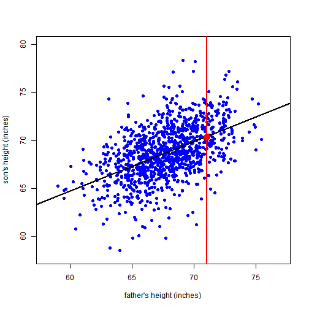

The shiny app uses the father.son dataset.
The objective of this app is to demonstrate the importance of proper sampling in data analysis.
The shiny app uses the father.son dataset.
The objective of this app is to demonstrate the importance of proper sampling in data analysis.
Here is a summary of the dataset
library(UsingR)
data("father.son")
summary(father.son)
## fheight sheight
## Min. :59.01 Min. :58.51
## 1st Qu.:65.79 1st Qu.:66.93
## Median :67.77 Median :68.62
## Mean :67.69 Mean :68.68
## 3rd Qu.:69.60 3rd Qu.:70.47
## Max. :75.43 Max. :78.36
There are three parts in the app that the user can control. In order to run the app successfully, the following steps should be followed:
The black line is the regression line, and the vertical line is the value for which the son's height is estimated.
The red dot shows the estimated height for the given father's height.
